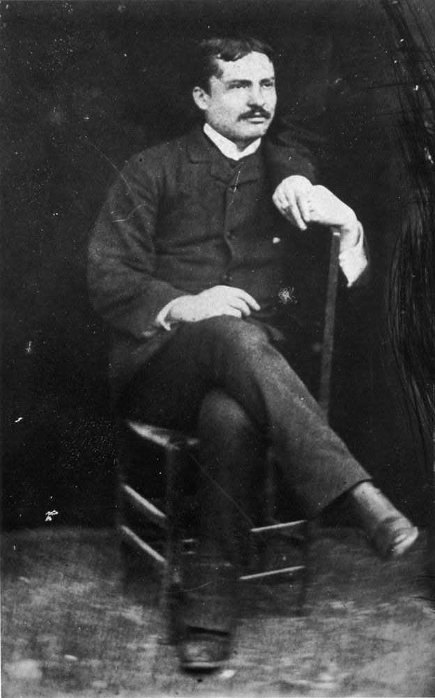

Giovanni Pascoli è uno dei maggiori poeti italiani tra Ottocento e Novecento. La sua poetica ruota attorno alla figura del "fanciullino", simbolo dello stupore e della capacità di vedere il mistero nascosto nella realtà.

Per Pascoli il mondo non è una realtà semplice e razionale, ma un mistero profondo che si rivela attraverso simboli, suoni e piccole cose quotidiane. La natura è viva, animata da presenze segrete che solo uno sguardo puro può cogliere. L’universo pascoliano è fragile, segnato dal dolore personale e dal bisogno di protezione, ma anche illuminato da improvvisi momenti di meraviglia.
Secondo Pascoli, dentro ogni uomo vive un piccolo fanciullo, una voce interiore che sa stupirsi di tutto ciò che vede e che sente. Da bambini questa voce coincide con la nostra, ma crescendo essa resta nascosta. Il poeta è colui che riesce ancora ad ascoltarla e a darle voce.
Il poeta è paragonato a un nuovo Adamo che mette nome alle cose per la prima volta. La poesia è intuizione pura: non nasce dalla razionalità, ma dallo stupore infantile che coglie il mistero della realtà.
La poesia è illuminazione improvvisa, intuizione momentanea che rivela la verità nascosta nelle cose semplici e quotidiane.
Il fanciullino è presente in ogni uomo. Il poeta conserva questa capacità e la trasmette attraverso i suoi versi, rendendo la poesia un linguaggio universale.
La poetica del fanciullino segna un momento centrale nella letteratura italiana: collega la tradizione romantica e apre alla sensibilità decadente. In Pascoli la poesia è uno sguardo innocente che rinnova il mondo.
San Lorenzo, io lo so perché tanto di stelle per l’aria tranquilla arde e cade, perché sì gran pianto nel concavo cielo sfavilla.
- Il fanciullino → stupore, intuizione, purezza - Poesia → rivelazione, simbolo, mistero - Natura → segni nascosti, suoni, cose umili - Poeta → voce dell’infanzia interiore